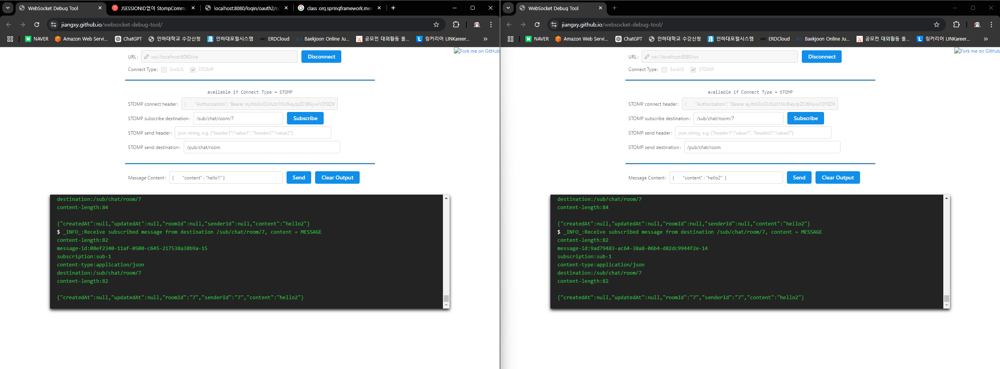
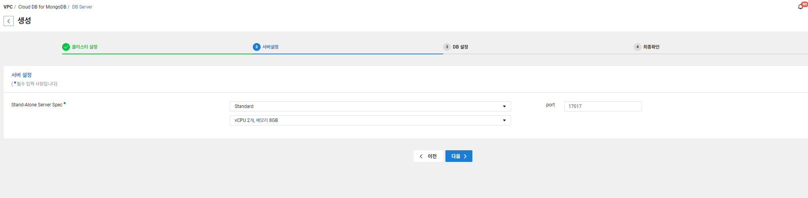
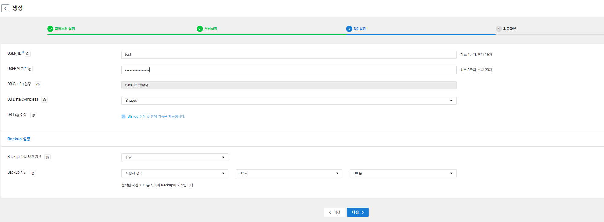

Kafka 설치 (Message Broker)


- 아무 폴더에 압축 풀기
- ⭐ 이때 폴더 이름이
kafka_2.13-3.9.0이렇게 나오는데 경로가 너무 길다고 억까를 시전한다.kafka로 폴더명을 바꿔주도록 하자
Kafka 실행
- kafka 경로로 가서 다음의 명령어 실행
- 먼저 zookeeper부터 실행을 해줘야 한다.
- Zookeeper 실행
bin\windows\zookeeper-server-start.bat config\zookeeper.properties - Kafka 실행
bin\windows\kafka-server-start.bat config\server.properties
- 정상적으로 실행된 모습

Cloud DB for MongoDB 설정 (채팅 메세지 및 채팅방(topic) 저장)
- MongoDB 설정
- 생성됨 → acg 설정 gogo
- acg설정 -완-
- DataSource 접속
- application.yml
spring: data: mongodb: uri: mongodb://{User}:{Password}@{Host}:{Port}/{database}
ChatMessage와 ChatRoom 엔티티
- ChatMessage
@Getter
@Setter
@Document(collection = "chatMessages") // MongoDB의 컬렉션 이름
public class ChatMessage extends BaseEntity {
private String roomId;
private String sender;
private String content;
}- ChatRoom
@Getter @Setter
@Document(collection = "chatRooms")
public class ChatRoom extends BaseEntity {
@Id
private String id;
private String sender;
private String topicName;
}
datasource:
url: jdbc:mysql://localhost:3306/mydb?serverTimezone=Asia/Seoul
username: root
password: 1234
driver-class-name: com.mysql.cj.jdbc.Driver